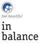
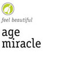
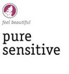

<html>
<head>
<title>Farfalla Essentials, Farfalla of Switzerland, Natural Cosmetics Aloe Shea</title>
<meta http-equiv="Content-Type" content="text/html; charset=iso-8859-1">
<meta name="description" content="Natural cosmetics and perfumes by Farfalla Essentials, Farfalla of Switzerland,Natural cosmetics, body care,carrier oils, essential oils, aromatic compositions,aromatic bath care">
<meta name="keywords" content="Rose Iris,natural perfumes, natural cosmetics,mens natural perfumes,essential wellness,Gemstone Cosmetics,hydrosols,certified natural cosmetics,scents,organic,bio,pure,after shave,alchemist,ambra,fresh lime, frangipani,aloe vera body butter,shower cream,eau fraîche,ambience,angelica,root antidegradants,application,aroma,aromatic,aromatic composition,aromatic wellness,atlas cedarwood,aura balance,aromatic room sprays,body sprays,balm,balsam,BDIH,benzoin,siam bergamot,basic care,blossom scent,blue planet,brand,bubble baths,cedarwood,certified organic crop,chamomile,sage, coconut oil,shandrani, l'amour,nerola,aura,alchemist,vetiver,huomo,mini spry set,cold pressed,compatible,concentration,cypress,damask,scented,sandalwood for men,skin care plan,scent,dermatologically tested,dry skin,emotional,energising, energy,essential,essential oils,eucalyptus,globulus,Farfalla,Farfalla of Switzerland,swiss quality,swiss brand,fir,focusing,fragrance,fragranced oils,frankincens,geranium,ginger,grapefruit,heavenly scent,hamamelis,witch hazel,high-quality,jasmine,juniper berry,labdanum,lavender,lemon,lemongrass,litsea cubeba,macadamia,Mandarin,Marjoram,massage oils,mature skin,meditation,melissa,mind,body and spirit,mood lifting,myrrh,neroli,olibanum,orange blossom,organic,organic qualities,palmarosa,patchouli,peppermint,petigrain,bigarade,precious,presents,profound,protective,pure essential oils,quality,ravintsara,refreshing,relaxation,relaxing,resins,revital,rituals,romantic night,room fragrance,rose,rosemary,roses,rosewood scent,impressions,senses,sensuousness,Siesta,silver fir,skin,skincare,smell,soft,care,spa,spicy,spirit,spra,styrax,suitable,superior,Sweet marjoram,orange,Switzerland,taj mahal,tea tree,teatree,tea-tree,tender,Thalasso,thyme,top-quality,true lavender,tuscany,vitalising,vitality,warmth,wellness,wild mountain lavender,wild rose oil,yarrow,ylang ylang,zanzibar">
<meta name="ROBOTS" content="ALL">
<meta http-equiv="CHARSET" content="ISO-8859-1">
<meta http-equiv="CONTENT-LANGUAGE" content="English">
<meta http-equiv="VW96.OBJECT TYPE" content="Homepage">
<meta http-equiv="AUDIENCE" content="General">
<meta name="RATING" content="General">
<meta name="EXPIRES" content="0">
<meta name="REVISIT-AFTER" content="5 days">
<link rel="stylesheet" href="css/css1.css" type="text/css">
<style type="text/css">
<!--
.Stil3 {color: #333399; font-weight: bold; }
.Stil31 {color: #333399}
-->
</style>
</head>
<p>&nbsp;</p>
<table width="780" border="0" cellspacing="0" cellpadding="0" align="center">
  <tr> 
    <td height="89" width="180"> 
      <div align="center"><a href="index.html"></a></div>
    </td>
    <td height="89" width="600"></td>
  </tr>
  <tr bgcolor="#333399"> 
    <td height="2" colspan="2"> 
      <table width="56%"  border="0" cellpadding="0" cellspacing="0" bordercolor="0" bgcolor="#333399">
        <tr>
          <td height="15"><a href="about_us.html"></a></td>
          <td></td>
          <td><a href="quality.html"></a></td>
          <td> </td>
          <td><a href="products.html"></a></td>
          <td></td>
        </tr>
      </table></td>
  </tr>
  <tr> 
    <td  bgcolor="#FFFFFF" bordercolor="#CCCCCC" width="180" valign="top"> 
      <p>&nbsp;</p>
      <table width="90%" border="0" cellspacing="0" cellpadding="5">
        <tr>
          <td height="183" valign="top"><p><a href="organic_face_care.html">&deg;<strong> Organic Face Care</strong></a></p>
            <p align="right"><a href="daily_refresh.html">daily refresh </a><a href="essentialoils.html">&deg;</a><br/>
              <a href="in_balance.html"> in balance &deg;<br/>
              </a> <a href="intense_moisture.html"> intense moisture &deg;<br/>
              </a><a href="age_miracle.html">age miracle</a> <a href="caution_symbols.html">&deg;</a><br/>
              <a href="pure_sensitive.html">pure sensitive &deg;</a><br/>
           <a href="pure_sensitive.html"> be beautiful &deg;</a><br/>
            <a href="travel_set.html">travel set &deg;</a></p>
            <p><a href="organic_mens_care.html">&deg; Organic Men's Care</a></p>
            <p><a href="essentialoils.html">&deg;</a> <a href="natural_perfumes.html">Natural Perfumes</a></p>
            <p align="left"> <a href="aroma_sprays.html">&deg; Aroma Sprays</a>
              </div>
            </p>
          <p align="left"><a href="natural_hair_care.html">&deg; Natural Hair Care</a> </p></td>
        </tr>
    </table></td>
    <td width="600" valign="top"> 
      <table width="100%" border="0" cellspacing="0" cellpadding="5">
        <tr> 
          <td valign="top" bgcolor="#FFFFFF"> 
            <p>&nbsp;</p>
            <table width="100%"  border="0" cellspacing="0" cellpadding="4">
              <tr>
                <td height="1324" valign="top"><h1 align="justify">Organic Face Care</h1>
                  <p align="justify"><strong><em><strong>feel beautiful </strong></em></strong></p>
                  <table width="100%" border="0" cellspacing="0" cellpadding="3">
                    <tr>
                      <td width="78%" height="213" valign="top"><p align="justify"><strong>                        Organic Cosmetics with Active Ingredients </strong></p>
                      <p align="justify">visibly effective. noticeably gentle. naturally innovative. </p></td>
                      <td width="22%" valign="top"><em></em><em>For an individual, holistic skin care 
                      regimen, I combine the productsto suit my personal needs. </em></td>
                    </tr>
                  </table>
                  <p align="justify"></p>
                  <p align="justify">All products are certified in accordance with the NaTrue certification of organic 
                    and natural cosmetics, i.e. either as &ldquo;Certified Organic Cosmetics&rdquo; or as &ldquo;Natural Cosmetics with a Portion of Organic Ingredients&rdquo;. <br/>
                  </p>
                  <p align="justify">Effective &ndash; thanks to innovative plant ingredients <br/>
                    These sophisticated formulas are based on innovative, active plant ingredients,
                    all of which have been thoroughly tested for their effectiveness. Wherever possible, 
                    only ingredients of certified organic origin are used. This highly-developed 
                    product range offers a solution for the individual care needs of every type and 
                    property of skin. <br/>
                  </p>
                  <p align="justify">Effective &ndash; thanks to organic vegetable oils <br/>
                    Highly valuable, cold-pressed and unadulterated vegetable oils of the very best 
                    organic quality are rich in natural active ingredients. Thanks to the smooth interplay 
                    of a diversity of components, the skin is cared for in a holistic way. <br/>
                  </p>
                  <p align="justify">Effective &ndash; thanks to mountain spring water and floral waters. <br/>
Instead of tap-water, our products contain floral waters of organic quality and 
                    mountain spring water drawn from a certified mineral spring, situated at 2470 
                    metres above sea level in the Swiss Alps.</p>
                  <p align="justify"><strong>Modular care system </strong><br/>
These organic cosmetics with active ingredients have been specifically designed 
                    to suit a modular system. From the various product lines, you can choose the
                    cleansing and care products that best suit your skin. Depending on the amount 
                  of oil, moisture and special care your skin needs, you may choose from:</p>
                  <table width="100%" border="0" cellspacing="0" cellpadding="3">
                    <tr>
                      <td width="18%"></td>
                      <td width="18%"></td>
                      <td width="18%"></td>
                      <td width="18%"></td>
                      <td width="13%"></td>
                      <td width="15%"></td>
                    </tr>
                    <tr>
                      <td valign="top">for daily skin cleansing care</td>
                      <td valign="top">for skin impurities at any age</td>
                      <td valign="top">for enhancing skin's moisture balance</td>
                      <td valign="top">for anit-ageing care</td>
                      <td valign="top">for sensitive skin</td>
                      <td valign="top">for care with a special &quot;feel good&quot; factor</td>
                    </tr>
                  </table>
                  <p align="justify"><strong>Farfalla 
                    sets standards </strong></p>
                  <p align="justify"><strong>0% Mineral oils </strong><br/>
                    Mineral oils form a film on the skin which can hinder the skin&rsquo;s respiratory activity 
                    and possibly plug the pores. Farfalla Organic Cosmetics with Active Ingredients, 
                  therefore, use only valuable and highly-effective organic vegetable oils. </p>
<p align="justify"><strong>0% Synthetic substances </strong><br/>
  Farfalla Organic Cosmetics with Active Ingredients use only natural essential oils
                    as fragrances and active ingredients. Wherever possible, essential oils of certified 
                    organic origin are added. The exclusive use of natural preservatives guarantees
                    the excellent sustainability of the products. Since colorants do not increase the 
                  value of products, Farfalla has completely refrained from their addition. </p>
<p align="justify"><strong>0% Silicone or polyethylene glycol (PEG) </strong><br/>
  We comply fully with the standards in the natural cosmetics industry and use
                    neither silicone nor polyethylene glycol in our products. These additives could 
                  lead to skin or general health problems if applied to the skin regularly. </p>
<p align="justify"><strong>No animal testing </strong><br/>
  Farfalla products are not animal-tested. Farfalla has never taken part in animal experiments
                  and has never asked any third party to act on their behalf in this regard. </p>
                  <p align="justify">                    <strong>No adverse reactions </strong><br/>
                    All products have been clinically and dermatologically-tested (Dermatest) and 
                    have been awarded the top classification of &ldquo;Very Good&rdquo;. This means that not a 
                  single person showed any adverse reactions to the products. </p>
<p align="justify"><strong>NaTrue </strong><br/>
  Farfalla Organic Cosmetics with Active Ingredients are certified in accordance
                    with the NaTrue certification of organic and natural cosmetics. NaTrue makes the
                  following distinctions: <br/>
                  Level 1: Natural cosmetics which correspond to the present Bundesverband <br/>
                    Deutscher Industrie und Handelsunternehmen (BDIH ) standards. <br/>
                    Level 2: Natural cosmetics with organic ingredients &ndash; at least 70% organic <br/>
                    ingredients. <br/>
                  Level 3: Organic cosmetics &ndash; at least 95% organic ingredients <br/>
                  <br/>
                  More than 80% of the Farfalla Organic Cosmetics with Active Ingredients comply 
                    with Level 3 (Organic Cosmetics) requirements, two products comply with the 
                    Level 2 (Natural Cosmetics ) requirements, and one product is listed as &ldquo;Natural 
                  Cosmetics&rdquo;. </p>
                  <p align="justify"><strong>Fair Trade </strong><br/>
                    Since the very beginning, it has been a part of Farfalla&rsquo;s philosophy to know the
                    manufacturers and cooperatives producing the Fair Trade raw materials we import
                    from over 40 countries worldwide. Through advance-financing, Farfalla helps to 
                    support small-scale projects that were initiated and are growing according to the 
                  philosophy and heartfelt endeavours of the people behind them. </p>
                  <p align="justify"><strong>Eco-Packaging</strong><br/>
                    Containers (jars or bottles). 
                    <br/>
                    The best protection for a product is a container (jar or bottle) made of glass. This is 
                    why we market these valuable Organic Cosmetics with Active Ingredients in glass
                    jars or bottles. Another positive aspect is that glass can be recycled without any
                    problems. Other packages in use are airless tubes and tubes made of recyclable
                  plastics. </p>
                  <p align="justify">Outer packaging <br/>
                    Outer packaging is necessary to protect the glass containers as much as possible. 
                    We also use it to convey important print information in various languages. The
                    ecological aspects are not overlooked either: The cardboard we use consists of 
                    100% sustainable FSC certified cardboard.                  <b><br/>
                    </b><br/>
                </p></td>
              </tr>
            </table></td>
        </tr>
      </table>
    </td>
  </tr>
</table>

<map name="Map">
  <area shape="rect" coords="0,0,90,101" href="daily_refresh.html" alt="daily refresh">
</map>

<map name="Map2">
  <area shape="rect" coords="2,1,92,102" href="in_balance.html" alt="in balance">
</map>

<map name="Map3">
  <area shape="rect" coords="0,2,90,103" href="intense_moisture.html" alt="intense moisture">
</map>

<map name="Map4">
  <area shape="rect" coords="2,1,89,102" href="age_miracle.html" alt="age miracle">
</map>

<map name="Map5">
  <area shape="rect" coords="2,0,90,103" href="pure_sensitive.html" alt="pure sensitive">
</map>

<map name="Map6">
  <area shape="rect" coords="1,1,89,101" href="be_beautiful.html" alt="be beautiful">
</map>
</body>
</html>
